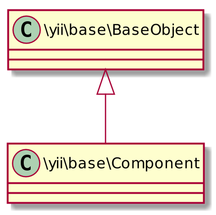

Ricardo Pérez López
IES Doñana, curso 2017-18
Se caracterizan por tener:
Las dos primeras características se heredan de \yii\base\BaseObject.

\yii\base\BaseObjectIntroduce las siguientes características:
En PHP, a las variables miembro de una clase (variables de instancia) se las denomina también propiedades.
Esas variables son parte de la definición de la clase, y se usan para representar el estado de una instancia de dicha clase.
La clase \yii\base\BaseObject de Yii 2 permite crear propiedades a partir de métodos getter y setter.
Toda clase que herede (directa o indirectamente) de \yii\base\BaseObject podrá definir propiedades de esa manera.
Por ejemplo:
namespace app\components;
class Foo extends \yii\base\BaseObject
{
private $_label;
// El método getter:
public function getLabel()
{
return $this->_label;
}
// El método setter:
public function setLabel($value)
{
$this->_label = trim($value);
}
}Crea la propiedad label, accesible mediante $foo->label.
Como setLabel($value) está definido como:
al asignarle una cadena a la propiedad se trimeará automáticamente, eliminando los espacios sobrantes:
Si definimos sólo el getter y no el setter, crearemos una propiedad de sólo lectura, por lo que podremos consultar su valor pero no cambiarlo:
Una instancia de la clase \yii\base\BaseObject (o de una subclase suya) permite ser configurado.
Una configuración es simplemente un array que contiene parejas de clave => valor, donde la clave representa el nombre de una propiedad (una cadena), y el valor es el valor que queremos asignarle a dicha propiedad.
Se pueden usar para:
Asignar valores de forma masiva a las propiedades de un objeto usando Yii::configure($objeto, $config).
Crear una instancia asignándole valores iniciales a sus propiedades usando Yii::createObject($config).
Más posibilidades que iremos viendo en su momento.
Supongamos la siguiente clase:
Algunas posibles configuraciones:
Se pueden aplicar a un objeto ya existente:
Una configuración también se puede usar para crear nuevas instancias y asignarle valores iniciales en la misma operación usando el método Yii::createObject($config).
Para ello es necesario que la configuración indique el nombre de la clase que se desea instanciar mediante un elemento con clave 'class'.
Ejemplo:
$p una nueva instancia de la clase Prueba con los valores$p->uno = 4 y $p->dos = 7.